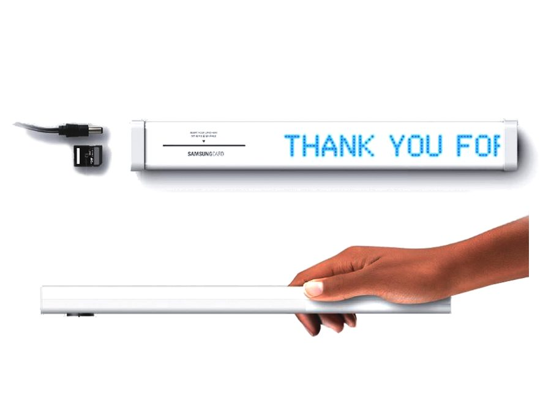

A new way to promote Samsung Card at retail checkout, not the usual screen or point-of-purchase sign. The interactive ThankU bar fits seamlessly into the mart shopping experience: cost-effective, memorable, and non-disruptive to the vendor.
Retail checkout is crowded with promotional screens and point-of-purchase signs that shoppers have learned to ignore. Samsung Card wanted a presence there that was memorable and cost-effective, but not disruptive to the shopper or the vendor.
The idea was to design something that fits seamlessly into the existing mart experience rather than interrupting it.
We developed the interactive ThankU bar, the humble plastic divider that separates customers' groceries on the belt. As well as dividing carts, it invites shoppers to insert their Samsung Card into a built-in slot for a faster, more efficient checkout.
It turns a throwaway retail object into a branded, genuinely useful moment, memorable precisely because it's helpful rather than intrusive.
